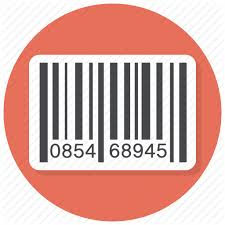

<!--<ion-header>
    <ion-navbar>
        <button ion-button menuToggle>
      <ion-icon name="menu"></ion-icon>
    </button>
        <ion-title>Home</ion-title>
    </ion-navbar>
</ion-header>-->

<div padding>
    <div class="text-center add-margin">
        <a></a>
    </div>
    <ion-list class="add-margin">

        <ion-item>
            <ion-input type="text" placeholder="Zipcode"></ion-input>
        </ion-item>

    </ion-list>
    <div padding class="text-center">OR</div>

    <div class="text-center add-margin">
        <a></a>
    </div>
    <div class="text-center">
        <h3>Scan barcode</h3>
    </div>
    <div class="app-footer text-center">
        <button (click)="goToPage()" class="add-margin footer-button" ion-button medium full>Search</button>
    </div>
</div>